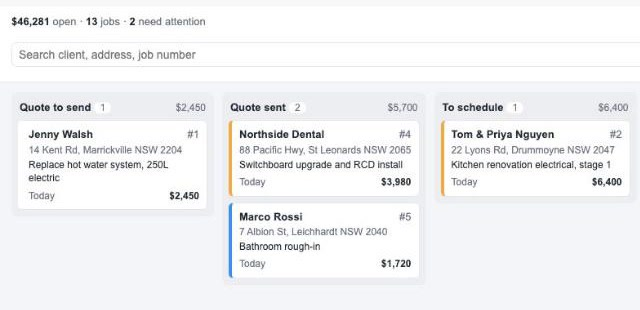
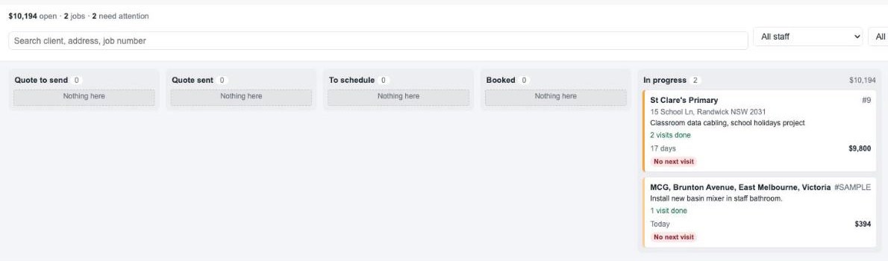

Every open job on one board, from quote to paid, so nothing slips through.
Help guide. Last updated 3 October 2026.

Job Pipeline is an add-on for ServiceM8. It reads the jobs already in your account and lays them out on a board with one column per stage. You can see at a glance which quotes need chasing, which accepted jobs still have no booking, which multi-visit jobs have run out of booked visits, and which invoices are still unpaid.
It only reads your data. It never changes a job, a booking or an invoice, and it doesn't store any of your data anywhere else.
| Permission | Used for |
|---|---|
| Read jobs | Job numbers, status, address, description, value and the dates used to work out each job's stage |
| Read schedule | Bookings and check-ins, to count visits and find the next booked visit |
| Read customers | Client names shown on each card |
| Read staff | Staff names on bookings, and the staff filter |
| Read job categories | Category colours on cards, and the category filter |
All permissions are read-only.
Click or tap any card to open that job in ServiceM8.
| Column | Which jobs land here |
|---|---|
| Quote to send | Jobs in Quote status where the quote hasn't been sent yet |
| Quote sent | Jobs in Quote status where the quote has been sent |
| To schedule | Work orders with no visits done and nothing booked |
| Booked | Work orders with a visit booked and no visits done yet |
| In progress | Work orders where at least one visit has happened (multi-visit and project work) |
| To invoice | Completed jobs where the invoice hasn't been sent and no payment is recorded |
| Awaiting payment | Completed jobs where the invoice was sent but no payment is recorded |
| Paid | Completed jobs paid recently (the last 14 days unless you change it) |
Each column heading shows how many jobs are in it and their total value. Inside a column, the jobs that have waited longest are at the top. The number of days on each card is how long the job has been in its current stage.
A visit counts as done once its booking time has passed or a staff member has checked in. Several staff on the same booking count as one visit.
| Flag | Meaning |
|---|---|
| Follow up | The quote was sent 7 or more days ago and hasn't been accepted |
| Not booked | The work order has had no booking for 7 or more days |
| No next visit | Work has started but there's no future visit booked |
| Overdue | The invoice was sent 30 or more days ago and is still unpaid |
Tick Needs attention to show only flagged jobs.

A Business Owner can change the flag timings in Settings › Preferences › Add-ons › Job Pipeline: when sent quotes get flagged, when unbooked work orders get flagged, when unpaid invoices get flagged, how long paid jobs stay on the board, and how old a quote or unpaid invoice can be before it's left off the board.
No. It has read-only access and never edits, moves or deletes anything. To change a job, click its card and edit it in ServiceM8 as usual.
The column comes from the job's status in ServiceM8 plus its bookings and invoice and payment records. A common cause is a payment recorded only in your accounting software: if it never reached ServiceM8, the job stays in Awaiting payment. Open the job and check its status, bookings and payments, then press Refresh.
Yes. It loads open work and recent history only. In very large accounts a note may say some older bookings weren't counted; the stages are still correct.
The price is shown on the add-on's page in the Add-on Store and is added to your ServiceM8 bill. To stop using it, open it in Features & Integrations and disconnect it. Billing through ServiceM8 stops from there.
Email admin@meridianlabssoftware.com. We usually reply within one business day (Sydney time). Please don't send customer details or passwords by email; a job number is enough for us to help.
Job Pipeline is made by Meridian Labs, an independent developer. It is not made or supported by ServiceM8. See our privacy policy.